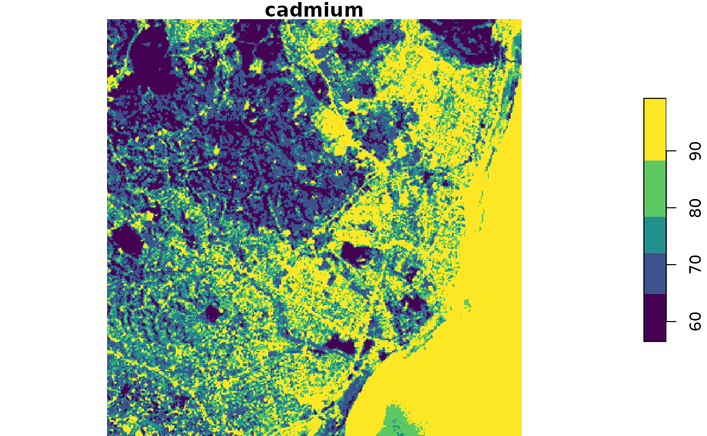

Introduction
{mlr3spatial} adds [mlr3::DataBackend]s for spatial classes ([terra::SpatRaster], [raster::brick], [sf::sf]). In addition, direct predictions to objects of these classes are supported. The direct return is a [mlr3::Prediction] object as for all other predict() returns in the {mlr3} ecosystem. Besides, the respective spatial objects can be written to disk and loaded into the session for further analysis.
Essentially, {mlr3spatial} takes of the burden of converting spatial objects into a plain data.table and then coercing the predicted values back into the spatial object while making sure to not loose the spatial reference.
There is one more goodie in the bag. Thanks to mlr3’s ability to predict in parallel with any learner, {mlr3spatial} prediction can also make use of future-based parallelization and speed up the predictions of spatial objects. Often enough, spatial predictions are quite large (in the millions of values) and efficient parallelization can save some time here. See the vignette on “Benchmarking parallel predictions” for details.
In the following, we showcase a step-by-step example how to handle a multi-layer raster object from package {terra}.
Use Case - {stars} objects
Data Preparation
Spatial objects are not included as built-in datasets into the package due to their size. Some helper functions like demo_stack_spatraster() are available to create such.
The SpatRaster consists of 500 columns and rows and contains five layers with each layer representing a variable.
The "Error in (function (x) : attempt to apply non-function" error can be ignored - this is an internal issue of the {terra} package during object creation and does not affect usage.
library("mlr3")
library("mlr3spatial")
library("mlr3learners")
library("stars")
#> Loading required package: abind
#> Loading required package: sf
#> Linking to GEOS 3.8.0, GDAL 3.0.4, PROJ 6.3.1
library("e1071")First, a {mlr3} classification task is created and a SVM learner is fitted with randomly sampled raster cells.
tif = system.file("tif/L7_ETMs.tif", package = "stars")
stack = stars::read_stars(tif)
backend = as_data_backend(stack)
task = as_task_regr(backend, target = "layer.1")
print(task)
#> <TaskRegr:backend> (122848 x 6)
#> * Target: layer.1
#> * Properties: -
#> * Features (5):
#> - dbl (5): layer.2, layer.3, layer.4, layer.5, layer.6For large raster files with millions of values it helps to predict in parallel. To enable this, set learner$parallel_predict = TRUE and initiate a parallel plan via {future}. This required {mlr3} >= 0.12.0.
learner_svm = lrn("regr.svm")
set.seed(42)
row_ids = sample(1:task$nrow, 500)
learner_svm$train(task, row_ids = row_ids)
print(learner_svm)
#> <LearnerRegrSVM:regr.svm>
#> * Model: svm
#> * Parameters: list()
#> * Packages: e1071
#> * Predict Type: response
#> * Feature types: logical, integer, numeric
#> * Properties: -Prediction
For prediction predict_spatial() is used. It will return a raster file which contains the predictions. Users can select which R spatial format the returned raster should have.
In the following, we will compare the way to conduct the prediction using {mlr3spatial} with the “native” way of fitting an e1071::svm() model and predicting with terra::predict().
mlr3spatial
ras = predict_spatial(task, learner_svm, format = "stars")
#> Warning in showSRID(SRS_string, format = "PROJ", multiline = "NO", prefer_proj =
#> prefer_proj): Discarded datum unknown in Proj4 definition
names(ras) = "cadmium"
print(ras)
#> stars object with 2 dimensions and 1 attribute
#> attribute(s):
#> Min. 1st Qu. Median Mean 3rd Qu. Max.
#> cadmium 57.59748 67.45409 78.34238 78.61442 89.09275 110.2793
#> dimension(s):
#> from to offset delta refsys point values x/y
#> x 1 349 288776 28.5 UTM Zone 25, Southern Hem... FALSE NULL [x]
#> y 1 352 9120761 -28.5 UTM Zone 25, Southern Hem... FALSE NULL [y]stars
Since the layers are merged in a {stars} object, one first need to split them up and convert them into a regular data.table. Next, the column names need to be adjusted to match the ones of the training data. Afterwards, the data.frame generic of predict() can be called. Finally, the predictions need to be injected into a stars object again.
(All of these steps are happening internally in {mlr3spatial}).
svm_e1071 = e1071::svm(layer.1 ~ ., data = task$data(rows = row_ids))
stars_stack = as.data.table(split(stack, "band"))
stars_stack[, c("x", "y", "X1")] = NULL
colnames(stars_stack) = task$feature_names
stars_pred = predict(svm_e1071, stars_stack)
# subset stars object to one band only
stars_pred_ras = stack[, , , 1]
# rename the layer name
names(stars_pred_ras) = "pred"
# assign predictions
stars_pred_ras$pred = stars_pred
print(stars_pred_ras)
#> stars object with 3 dimensions and 1 attribute
#> attribute(s):
#> Min. 1st Qu. Median Mean 3rd Qu. Max.
#> pred 57.59748 67.45409 78.34238 78.61442 89.09275 110.2793
#> dimension(s):
#> from to offset delta refsys point values x/y
#> x 1 349 288776 28.5 UTM Zone 25, Southern Hem... FALSE NULL [x]
#> y 1 352 9120761 -28.5 UTM Zone 25, Southern Hem... FALSE NULL [y]
#> band 1 1 NA NA NA NA NULLOutput consistency
Now that we have executed two predictions, we would like to verify that these are actually identical.
all.equal(as.numeric(stars_pred_ras$pred), as.numeric(ras$cadmium))
#> [1] TRUEVisualization
Finally we can plot the predictions. The color vector is extract from the viridis color palette via dput(viridis::viridis_pal()(12)).
plot(ras, col = c("#440154FF", "#482173FF", "#433E85FF", "#38598CFF", "#2D708EFF",
"#25858EFF", "#1E9B8AFF", "#2BB07FFF", "#51C56AFF", "#85D54AFF",
"#C2DF23FF", "#FDE725FF"))